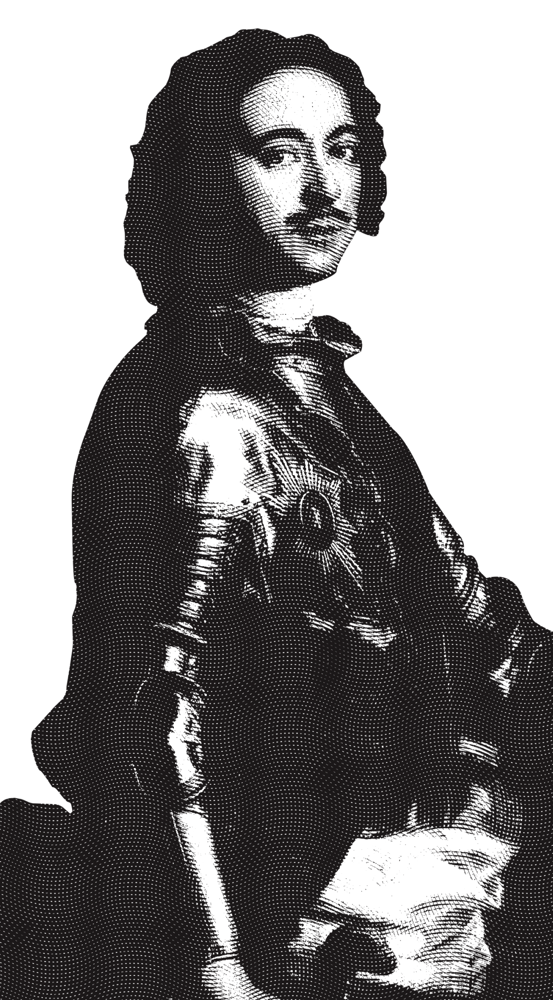

Петровские реформы системы оказания медпомощи на флоте
При Петре I русский флот стал одним из самых могущественных в мире. Реформы, проведённые императором, касались и военно-морской медицины. Одна из проблем, с которой столкнулся царь-реформатор, — катастрофическая нехватка медицинского персонала.
Для воспитания собственных специалистов были учреждены госпитальные школы, в которых, однако, поначалу не преподавали специфику морской медицины.
Вскоре после организации первых госпитальных школ пришло понимание, что морская медицина имеет значительные отличия от сухопутной.